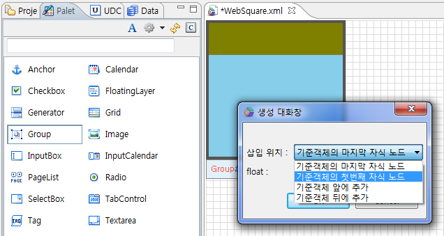

2.툴바 개선사항
WebSquare5.0버전은 하위 버전보다 한층 업그레이드 된 UI툴바를 제공하고 있습니다. 사용자 중심의 접근이 편리하게끔 만들어진 도구 입니다.
2.1그리기 모드 변경 및 position 속성 변경
WebSquare5 Studio에서 화면그리는 방법은 아래 2가지가 있습니다.
사용자 편의성에 따라 편집방식을 선택하실 수 있습니다.
[그림 2-1]18
Change Draw Mode- Click & Click 방식의 그리기 모드로써 Design Tab에서 선택된 컴포넌트를 기준으로 팝업창에 의해 삽입 위치가 결정되는 모드입니다. 컴포넌트의 종류에 따라 "기준 컴포넌트의 첫번째 자식 노드", "기준 컴포넌트의 마지막 자식 노드", 기준 컴포넌트의 앞에 추가", "기준 컴포넌트의 뒤에 추가" 등의 옵션이 있습니다.
Position- 컴포넌트의 Position 정보 선택 기능. Position 타입으로 Static, Relative, Absolute 가 있으며 Position 을 선택한 후 컴포넌트를 추가하면 선택한 Position으로 컴포넌트가 추가됩니다.
2.1.1Flexible Mode
손 모양의 아이콘을 클릭하면 Change Draw Mode가 활성화 됩니다. 이어서 그룹 컴포넌트를 그려보겠습니다.
palet창에서 그룹을 클릭하면 디자인뷰에서 생성 대화창이 활성화 됩니다. OK 버튼을 클릭하면 아래 화면이 그려집니다.
현재 그려진화면은 static 모드로 되어있고 자동으로 자동으로 넓이 높이값이 부여됩니다. 그룹하나를 더 생성해서 대화창의 삽입 위치를 선택 해 보겠습니다.
디자인 뷰에서 이미 그려진 그룹 컴포넌트를 선택한 후 Palet창에서 그룹을 클릭하면 동일한 대화창이 뜨는데 삽입위치에서 "기준객체의 첫번째 자식 노드"를 선택하여 확인을 누르겠습니다.
[그림 2-2]19
-----------------------------
밖의 그룹 배경색 : skyblue
내부 그룹 배경색 : olive
기준객체의 첫번째 자식 노드에 그려졌음을 확인할수 있습니다.

기준객체를 선택하고 그룹을 하나 더 추가 해보겠습니다. 이번에도 "기준객체의 첫번째 자식 노드"를 선택하 고 확인을 누르겠습니다.
[그림 2-3]20
두번째 자식객체그룹배경색 :teal
두번째 자식객체그룹이 첫번째 자식객체의 위에 그려진것을 확인할수 있습니다. 반대로 기준객체의 마지막자식노드에 삽입하면 올리브배경색의 밑에 그려지겠죠?
이번에는 기준객체 앞에 추가 해보겠습니다. 전체 그룹을 선택하고 그룹컴포넌트를 클릭합니다.
기준객체 앞에 추가되는것을 확인할 수 있습니다.
웹스퀘어5.0에서는 float 타입을 별도의 스타일 편집없이 직접 선택가능하게끔 상단 툴바에 설치했습니다, 두 그룹을 선택 후 툴바에서 float 화살표를 선택해서 float:left 를 선택하여보시면 블록상태였던 두 그룹이 인라인으로 옆으로 붙은것을 확인할수있습니다.
2.1.2Strict Mode 모드
손 모양의 아이콘을 해제하면 without Change Draw Mode가 활성화 됩니다. Click & Drag 방식은 예전의 그리는 방식이므로 websquare2.0 편집에 익숙한분들은 StrictMode로 개발하셔도 무방합니다
2.1.3static, relative, absolute 모드
웹스퀘어5.0에서는 기존 하위버전에서 키보드+마우스로만 position값을 제어할수있는 방식을 직접 선택가능한 옵션으로 툴바에 설치해놨습니다. 하여 화면을 그릴때 반복된 키보드 보조없이 사전에 선택하고 그릴수 있습니다.
예) position을 absolute 로 설정한 후 palet창에서 그룹을 그려보시면 해당그룹이 absolute로 그려진것을 확인 할수 있습니다.
static 모드에서는 드래그앤드랍이 안됩니다.
원하는 위치에 화면을 그리고 싶으면 position값을 relative 나 absolute로 설정하시고 드래드 하셔야 합니다.